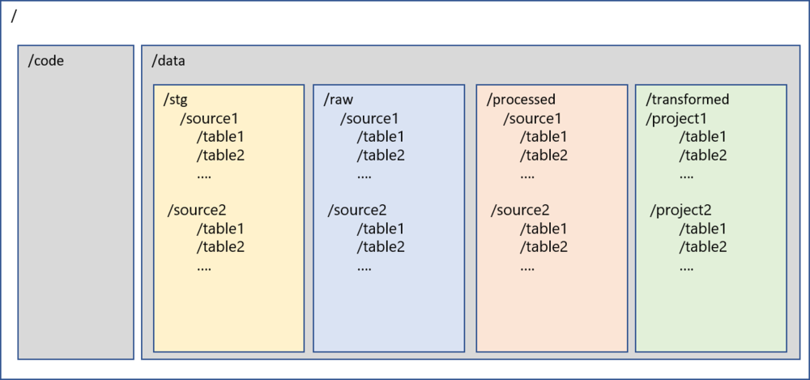

How to structure the Data Lake

Data lake is framework/ concept/ guidance on where to place the data (except Microsoft named their product as Azure Data Lake). From technology point of view, it suggests to store all the data in object oriented or hierarchical storage. This is the concept of the data locality and that the data can collected in a central location and processed at that location before being deiminated to any consumers.
Microsoft, AWS and Google (GCP) al have great offerings in this area namely Azure Storage Accounts, Amazon S3 and Google Cloud Storage respectively. Customers who are moving to cloud are choosing one of these key technologies to store the data and use it as data lake.
The first question that teams come across when implementing the data lake is “How to structure the Data Lake?”. There is not database or table concept here. We are dealing with folders and files so the structure of the data lake becomes important and key factor before starting the implementation.
There are no right or wrong approach to design the lake and it comes down to structure of the organization, business priorities and outcomes needed to be achieved. There are however, recommendation and best practices that can be leveraged to design a lake that can be maintained and managed.
The key reasons for the need of good data lake structure are:
-
Security: need of role-based security on the lake for read access
-
Extendibility: it should be easy to extend the lake after first round and more systems can be added
-
Usability: it should be easy to use and find the data in the lake and the users should not get lost
-
Governance: it should be simple to apply governance practices to the lake in terms of quality, metadata management and ILM
One of the possible structures of the lake is recommended below. This is based on my experience with implementation of data lake with three customers

Figure 1 - Structure of Data Lake
Description
Below is the description of the folders inside the data lake
/
root folder for data lake
/code
Primary level 1 folder to store all the code related files. Sub-folders can be created in the code folder to store various types of code/jar files/libraries etc.
/data
Primary level 1 folder to store all the data in the lake. Code and data will be only two folders at the root level of data lake
/data/stg
Level 2 folders to store all the intermediate data in the data lake from ingestion mechanisms. This will be transient layer and will be purged before the next load. This provides the resiliency to the lake. This folder will be further segregated by source systems similar to raw layer
/data/raw
Level 2 folders to store all the data in the data lake from ingestion mechanisms. This data will be complete snapshot of the records captured during ingestion. This folder will be further segregated by source systems and tables. Under each source and table folders there will be files pertaining to the time when the data was loaded. This will be one to one copy from stg folder.
The folders inside the /data/raw will be saved in the same hierarchy as the source system. E.g. the source system data base by the name of XXXX will be stored in the folder with name XXXX inside /data/raw and the schema names and table names will be propagated as folders. IoT or Streaming data can also be accommodated in this layer and the source of the streaming data will decide the folder structure under the /raw folder.
The same folder structure will apply to the /data/stg, and /data/processed
Some of the other commonly used names for this folder are /storage, /lake, /ingested
/data/processed
Level 2 folder to store the data which is processed and certified from the raw layer. Data quality rules, inserts/updates/deletes can be applied to /raw and data can be moved to /processed. This will also be the segregated by source system and will have similar structure as /raw for the data that has been certified.
Some of the other commonly used names for this folder are /certified, /curated, /consumption
/data/transformed
This is the folder to store the data after business specific transformations have been applied to the data. The subfolders will vary by projects and initiatives. The folders inside /data/transformed will be saved by project/business initiative level. This data will be transformed as per the business rules/needs of the project
Some of the other commonly names for this folder are /downstream, /final, /project
Benefits
Following are the benefits of this structure described above
-
Data lineage and data mapping is easier, and it enables data traceability
-
Enables reuse of the source data assets for other projects
-
Project specific transformations are carried out in data lake to enable transformation using latest technologies at scale
-
Security can be easily applied at each layer to enable RBAC